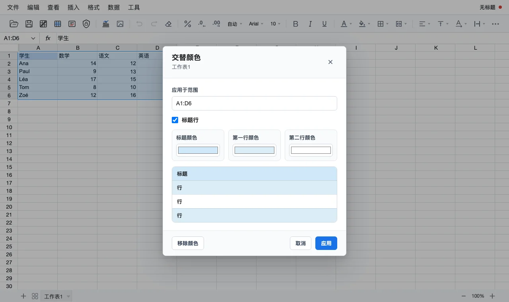

格式设置
文本
| 命令 | 位置 |
|---|---|
| 粗体、斜体、下划线 | ；Ctrl B、Ctrl I、Ctrl U |
| 字体 | Arial 列表：十三种字体 |
| 字号 | 10 列表，或 格式 › 字号：9 到 72 |
| 文字颜色、填充颜色 | |
| 清除格式 | 、格式 › 清除格式 |
在颜色面板中，重置颜色 移除颜色；自定义 打开系统的取色器。
修改单元格时，格式应用于所选的那部分文本。
对齐
| 命令 | 选项 |
|---|---|
| 水平 | 左、中、右 |
| 垂直 | 上、中、下 |
| 旋转 | 倾斜、垂直、堆叠 |
| 换行 | 溢出：延伸到相邻空单元格；自动换行：分多行；截断：在边框处截断 |
未选择对齐方式时，数字和日期靠右，其余靠左。
边框
绘制所选边框；其箭头提供各边（上、外、内、全部、无、对角线）、线条的颜色和样式。请先选颜色和样式，再选边。
合并
或 格式 › 合并单元格：
| 命令 | 效果 |
|---|---|
| 全部合并 | 合并为一个单元格，只保留一项内容 |
| 垂直合并 | 每列一个单元格 |
| 水平合并 | 每行一个单元格 |
| 取消合并 | 恢复单元格 |
含合并单元格的区域不能排序或筛选。
交替颜色
或 格式 › 交替颜色... 为所选区域隔行着色，可带标题行。三种颜色均可选择。

它们是普通的填充颜色：不随排序或插入行变化。移除颜色 将其从区域中移除。
网格线
或 查看 › 显示 › 网格线 在工作簿的所有工作表中隐藏或显示灰线。打印有单独的设置。
要让颜色取决于值，请参见条件格式。